三角形
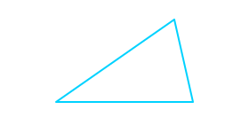
三角形是具有三条边和三个角的图形。
三角形的面积
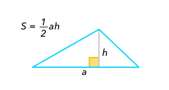
中位线

三角形中位线（中线）是连接三角形两边中点的一条线段。
中点

线段的中点是其中间的点，它将线段平分。
中线
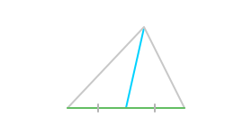
五边形
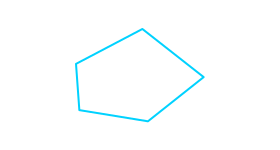
五边形是指所有具有五条边的多边形。
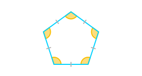
正五边形是一个凸五边形，五条边长度相等，五个角大小相等。
八边形
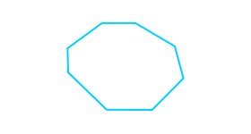
八边形是指所有具有八条边的多边形。
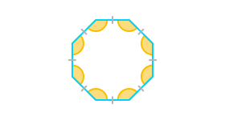
正八边形是一个凸八边形，各条边长度相等，各个角大小相等。
公切线
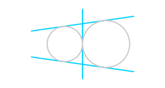
公切线是同时与两个圆相切的直线。
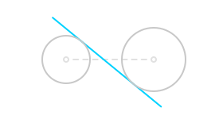
内公切线与连接两个圆心的线段相交。
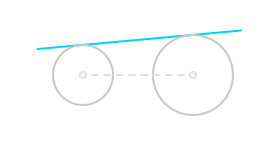
外公切线与连接圆心的线段不相交。
六边形
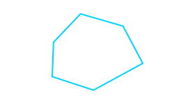
六边形是指所有具有六条边的多边形。
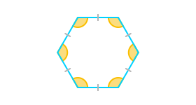
正六边形是一个凸六边形，各条边长度相等，各个角大小相等。
六边形的对角线
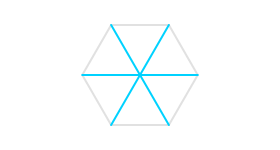
正六边形的主对角线是连接六边形两个相对顶点的线段。它是正六边形最长的对角线。
内切圆
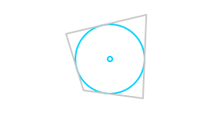
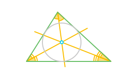
内切圆的圆心（称为内心）是多边形角平分线的交点。
内接
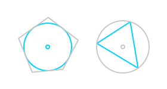
如果一个图形仅接触另一个图形的边（或内部），那么这个图形是另一个图形的内接图形。
内接多边形
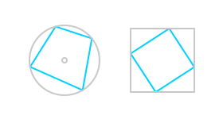
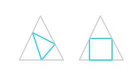
如果多边形所有顶点位于一个图形（圆或另一个多边形）上，则多边形是该图形的内接图形。
几何中心
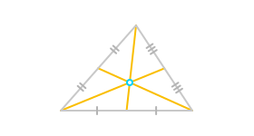
它以 2:1 的比例分割每条中线。
几何平均数
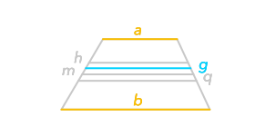
两个数几何平均数的公式为
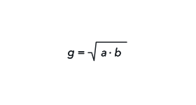
凸多边形
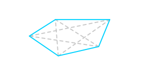
切线
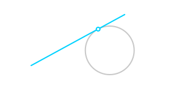
圆的切线是仅与圆相交于一个点的直线。
割线
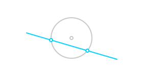
圆的割线是与圆具有两个公共点的一条直线。
勾股定理
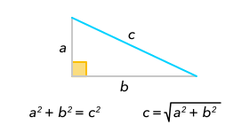
直角三角形斜边的平方等于另外两条边的平方和。
反射
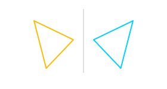
反射是将一个物体沿着一条线（轴）变换成它的镜像的转换。
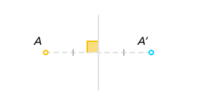
点 A 关于某个轴的反射是点 A'，那么这条轴是线段 AA' 的垂直平分线。
同心圆
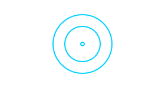
同心圆是具有相同圆心的圆。
周长
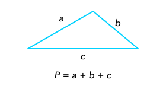
周长是指图形一周的长度。
四边形
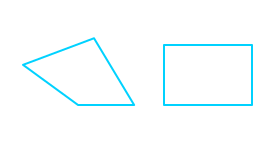
四边形是具有四条边的多边形。
圆
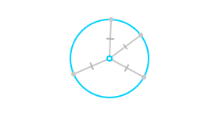
圆是在一个平面内到定点（圆心）的距离等于定长的所有点的集合。

圆的半径是连接圆心和圆周上点的线段。
均方根
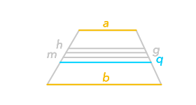
两个数均方根的公式为
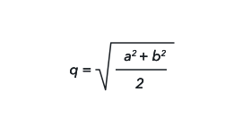
垂心
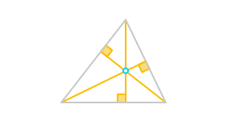
三角形的垂心是三角形三条顶垂线的交点。
垂直平分线
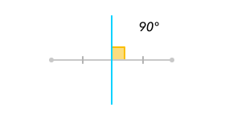
垂线
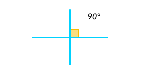
如果两条直线相交为直角，就说一条线垂直于另一条线。
垂线段
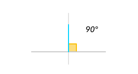
外切圆
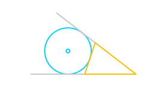
三角形的外切圆或旁切圆是位于三角形外部的圆，与三角形一条边和另外两条边的延长线相切。
外接
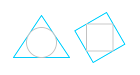
如果一个图形仅接触另一个图形的顶点（或其他边缘），那么这个图形就是另一个图形的外接图形。
外接圆
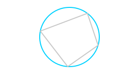
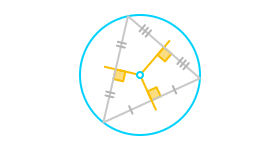
多边形
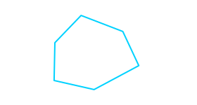
多边形是平面和区域内一系列线段组成的封闭图形。
多边形面积
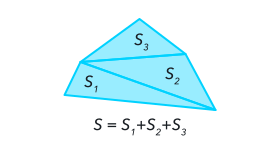
对向角
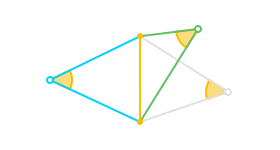
对向角是由两条射线组成并且具有一个已知端点的角，两条射线经过线段的两个端点。
对称
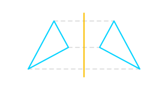
如果一个图形是另一个图形关于一条线的反射图像，那么两个图形关于这条线对称。
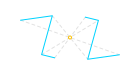
如果一个图形是另一个图形关于一点的反射图像，那么这两个图形关于这个点对称。
对称中心

如果一个图形绕着点反射旋转 180° 后能与另一个图形重合，那么这个点就叫做这两个图形的对称中心。
对称轴
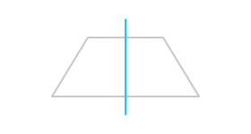
对称轴是轴对称图形中的一条直线，沿着这条直线折叠，直线两旁的部分能够互相重合。
对角线
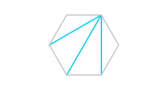
射线
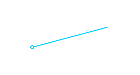
射线是直线的一部分，具有一个端点，向另一个端点方向无限延伸。
平行四边形
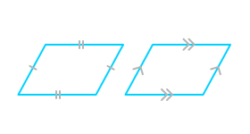
平行四边形的中心
平行线
平行线是在一个平面内任何点都不会相交的直线。
平角
弦
折线
折线是由几条线段构成的连续图形。
按比例分割线段
如果某个点将一条线段分成段，两条线段的长度符合一定的比例。
旋转
旋转是图形围绕旋转中心 （或点）进行旋转运动 。
绕着点 O 旋转角 α，点 A 将移动到点 A'，那么角 AOA' 等于 α 且 |OA|=|OA'|。
梯形
梯形是具有一组对边平行的四边形，另一组对边不平行。
平行的两条边称为底边；不平行的两条边称为腰。
正多边形
正多边形是等角（所有角大小相等）等边（所有边长度相等）的凸多边形。
正方形
正方形是具有四个等角和四条等边的四边形。
点到线的距离
点到线的距离是指点到直线的垂线段的长度。
点反射
点反射是围绕着已知点（反射中心）旋转 180°。
点 A 关于点 O 的反射是点 A'，那么 O 是 AA' 的中点。
直径
圆的直径是经过其圆心的弦。
直线之间的距离

直角
直角三角形

直角边是锐角的对边。
斜边是直角的对边。
直角梯形
相切圆
相切圆是具有唯一一个交点的两个圆，交点为切点。
如果两个圆的圆心位于切点的两侧，它们相互外切。
如果两个圆的圆心位于切点的一侧，它们相互内切。
矩形
矩形也是平行四边形。
等腰三角形
等腰三角形是两条边长度相等的三角形。

两条相等的边称为腰，第三条边称为底边。
注意！ 如果你的任务构造一个等腰三角形，等边三角形不能算作一个解法。
等腰梯形
等腰梯形是两腰相等的梯形。
等边三角形
等边三角形是三条边长度相等的三角形。
算术平均数
两个数算术平均数的公式为
线段
线段（线）是直线的一部分，两端有端点。
菱形
菱形是四条边相等的四边形。
菱形也是平行四边形。
角
角是由两条有公共端点的射线组成的图形。
这些射线被称为角的边。公共端点被称为角的顶点。
角的计量单位是度。
角平分线
角平分线是从角的顶点引出的一条射线，将这个角分成两个大小相等的角。
调和平均数
两个数调和平均数的公式为
钝角
钝角是大于直角和小于平角的角，大小介于 90° 至 180° 之间。
钝角三角形
锐角
锐角三角形
顶垂线
三角形的顶垂线（高）是从顶点到三角形对边所在直线的垂线段。